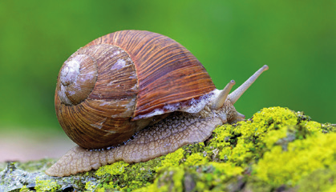
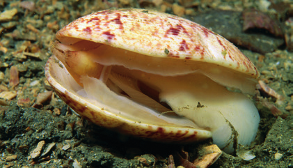
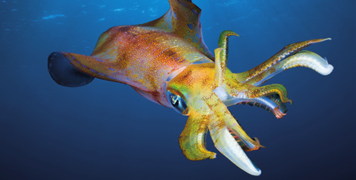
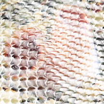
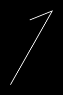
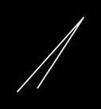
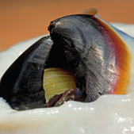

En este grupo se incluyen el caracol, la babosa y la lapa.
La cabeza, muy desarrollada, posee cuatro tentáculos. En los extremos de los más largos están los ojos; los cortos se relacionan con el sentido del tacto.
Posee una sola concha, aunque a veces carecen de ella.
Emplean el pie, que tiene forma de suela, para reptar.

Caracol sobre musgo
Bivalvos
Son bivalvos la almeja, el mejillón y la ostra.
La cabeza es inapreciable y presenta una boca sin rádula. No tienen ojos, pero pueden tener órganos sensibles a la luz en el borde del manto.
Poseen dos conchas o válvas.
Tienen un pie en forma de hacha. Lo contraen y estiran para desplazarse.

Vieira abierta
Cefalópodos
El pulpo, el calamar y la sepia pertenecen a este grupo.
Su cabeza está muy desarrollada. En ella se localizan el cerebro y los ojos, los más complejos de todos los animales invertebrados.
Una parte del pie es una corona de tentáculos que se sitúa en la parte anterior de la cabeza.
Poseen un sifón que regula la entrada y salida de agua de la cavidad del manto para favorecer el intercambio gaseoso en las branquias. También sirve como sistema de propulsión a chorro.
La mayoría carece de concha externa; algunos la tienen interna, como el jibión de la sepia y la pluma del calamar.

Calamar colorido

Criatura marina

Línea diagonal

Líneas abstractas

Cerca de un marisco